An IT Support & Network Technician specialist. Expert in building secure infrastructure, optimizing systems, and network reliability.
Saya adalah lulusan Teknik Komputer dan Jaringan dari SMKN 13 Bandung. Dengan fokus mendalam pada administrasi sistem dan jaringan, saya menguasai konfigurasi perangkat Mikrotik dan Cisco. Selain itu, saya juga memiliki kompetensi instalasi jaringan FTTH dan manajemen jaringan fiber optik, termasuk penyambungan core, pengukuran, dan troubleshooting untuk memastikan performa jaringan yang optimal.
Ketertarikan saya pada infrastruktur membawa saya menjadi perwakilam kota Bandung dalam kompetisi LKS IT Network System Administration tingkat provinsi.
Penyambungan core (Splicing), instalasi drop core, pemasangan fast connector, pemasangan ODP, dan penarikan jalur WiFi ke rumah pelanggan.
Routing, Switching, Firewall, Hotspot, & Bandwidth Management menggunakan Winbox.
VLAN, Inter-VLAN Routing, & Basic CCNA Level configurations.
Server deployment, Web Server, DHCP, & Basic Shell Scripting.
Mohon klik tombol di atas untuk melihat foto kegiatan
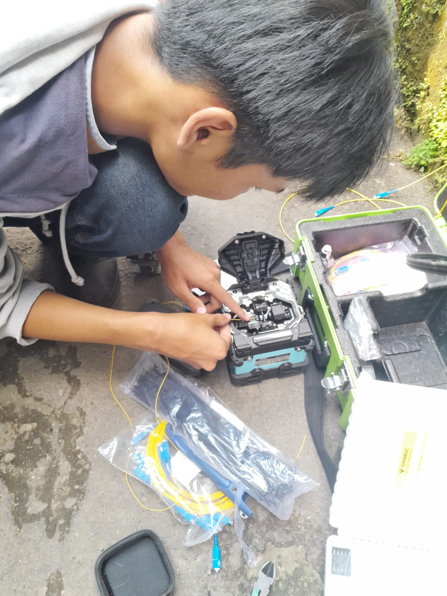
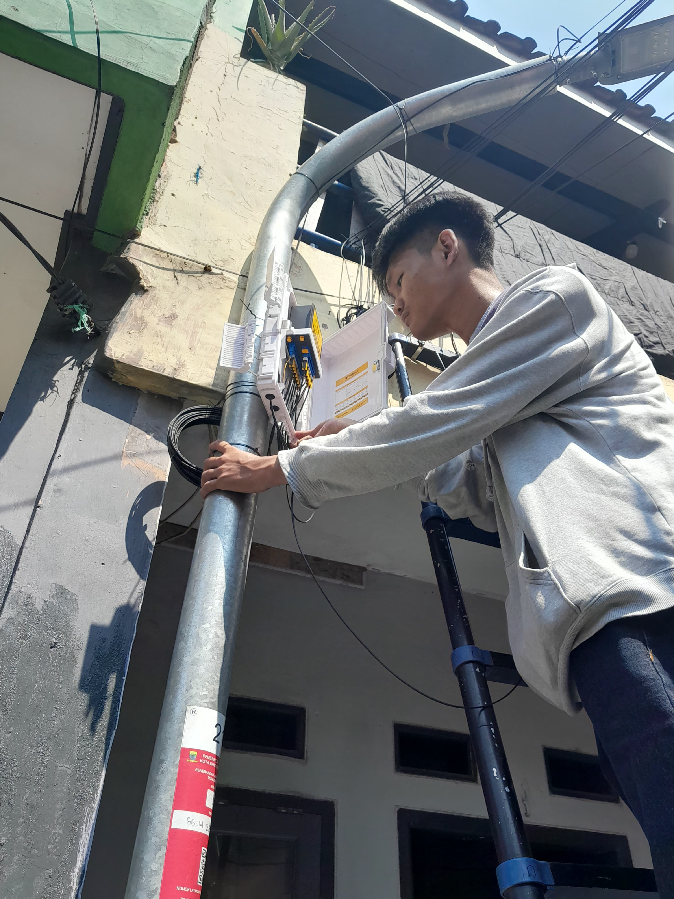
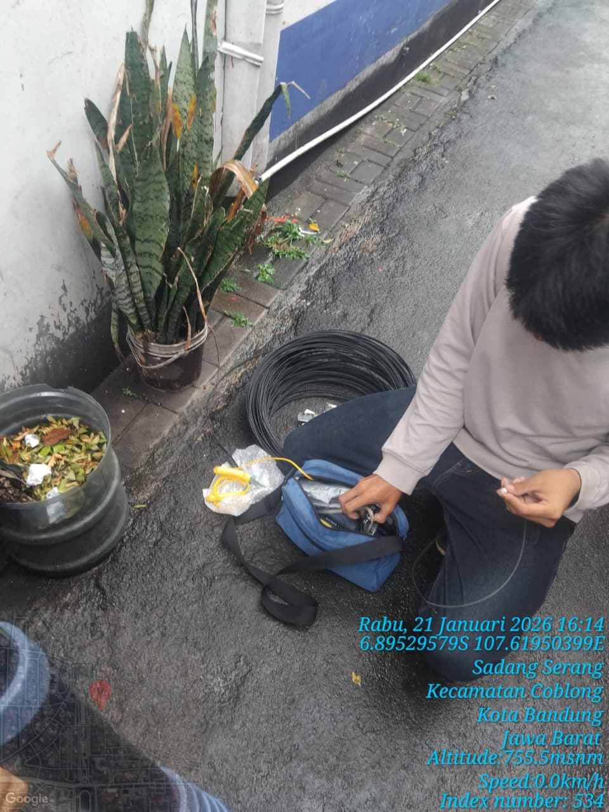
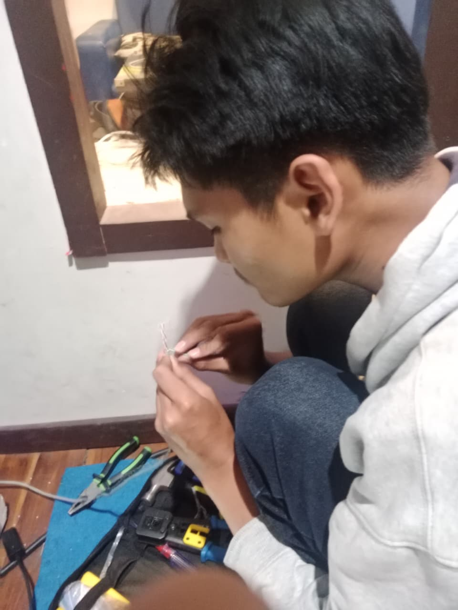
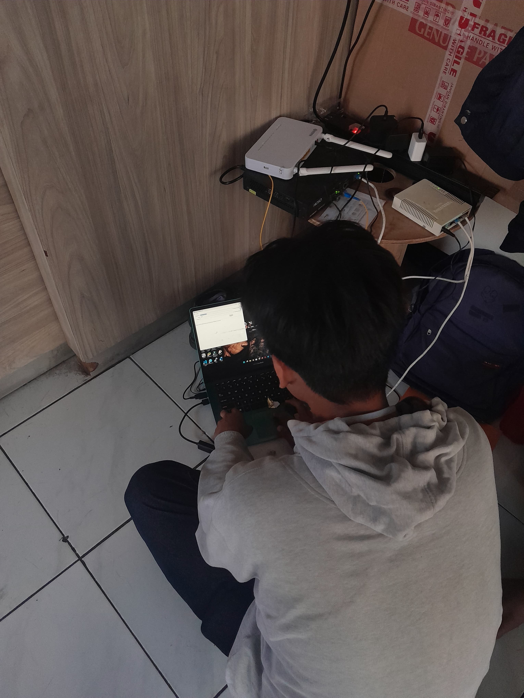
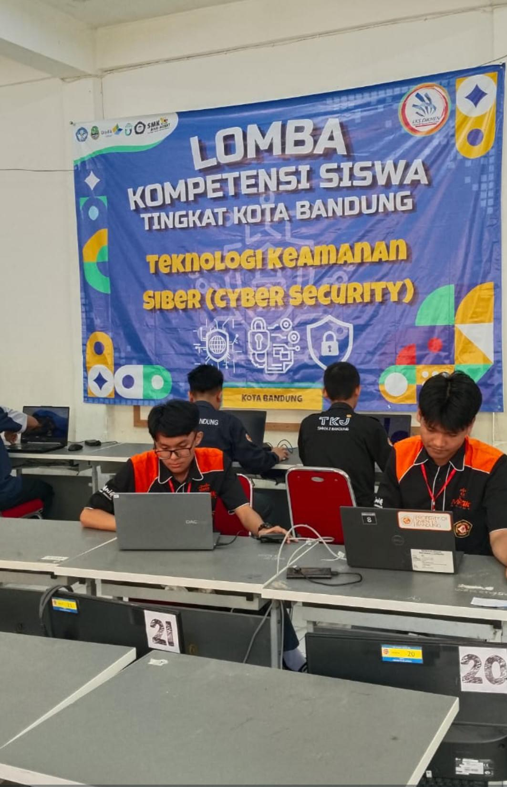
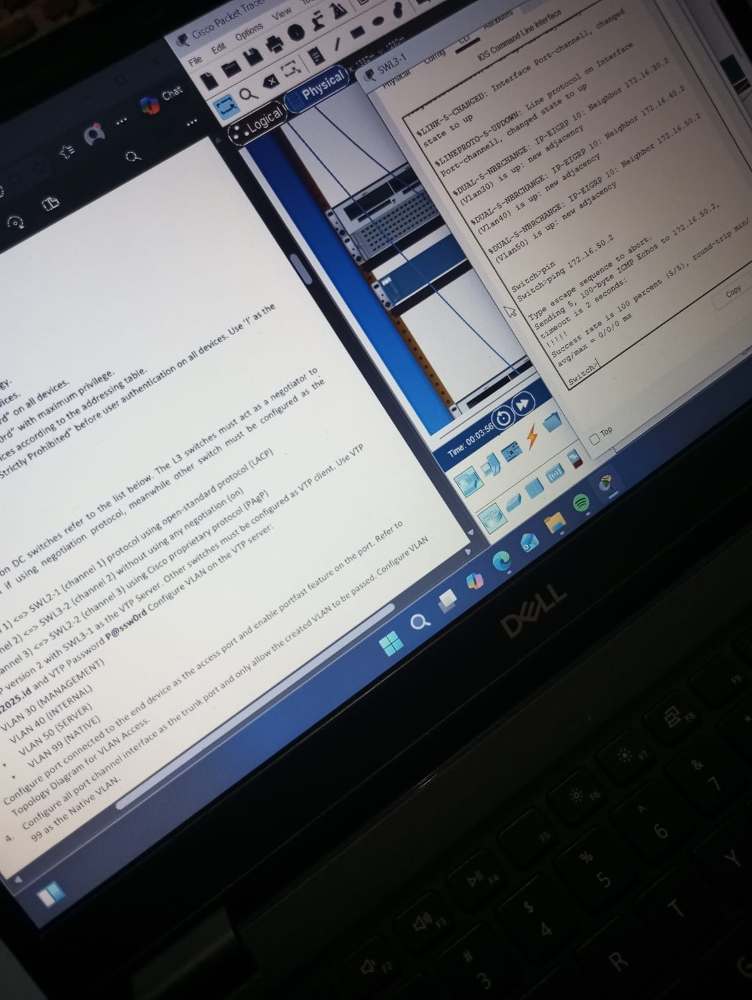
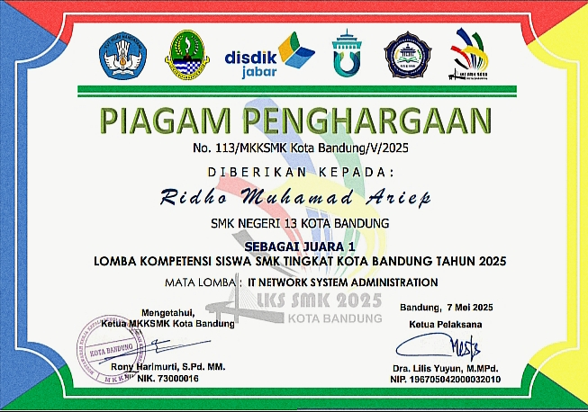
Bukti keikutsertaan dan kompetensi dalam ajang bergengsi LKS Tingkat Provinsi.
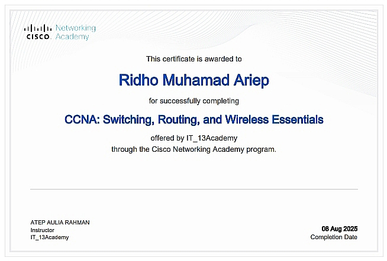
Sertifikasi resmi untuk validasi kemampuan manajemen jaringan dasar menggunakan Cisco.
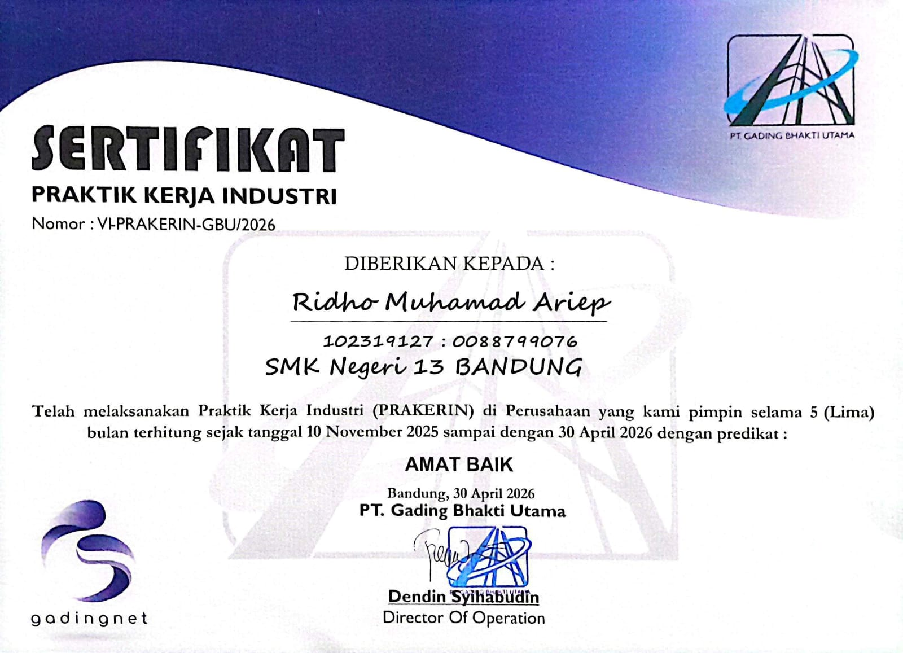
Validasi kompetensi industri dalam lingkup kerja teknisi jaringan lapangan dan pemeliharaan infrastruktur.
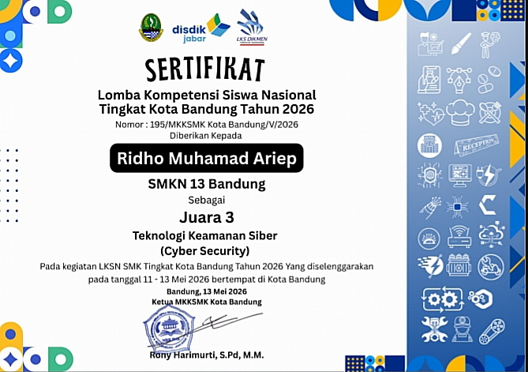
Bukti keikutsertaan dan kompetensi dalam ajang bergengsi LKS Cyber Scurity Tingkat Kota.